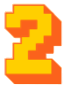
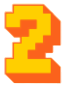

Instrucciones del Juego
¡Bienvenido a [Nombre de tu Juego]!
Objetivo del Juego:
- Derrota a tu oponente reduciendo su barra de salud a cero.
- Cada jugador comienza con 100 puntos de salud.
Controles:
Jugador Uno (izquierda):
- Mover hacia la izquierda: Tecla A
- Mover hacia la derecha: Tecla D
- Mover hacia abajo: Tecla S
- Saltar: Tecla W
- Ataque hacia la izquierda: Tecla V
- Ataque hacia la derecha: Tecla B
Jugador Dos (derecha):
- Mover hacia la izquierda: Tecla ←
- Mover hacia la derecha: Tecla →
- Mover hacia abajo: Tecla ↓
- Saltar: Tecla ↑
- Ataque hacia la izquierda: Tecla O
- Ataque hacia la derecha: Tecla P
Cómo Jugar:
- Controla tu personaje usando las teclas indicadas.
- Utiliza saltos y movimientos estratégicos para esquivar ataques enemigos.
- Ataca a tu oponente para reducir su barra de salud.
- Cada ataque exitoso causa daño y puede aplicar retroceso al oponente.
- ¡El jugador cuya barra de salud llegue a cero primero pierde!
Consejos:
- Observa tu barra de salud en la parte superior de la pantalla.
- ¡Cuidado con los ataques enemigos y reacciona rápidamente!
- Utiliza tácticas de salto y esquiva para evitar daño.
- ¡Diviértete y demuestra quién es el mejor luchador!
Fin del Juego:
- Cuando la barra de salud de un jugador llega a cero, se mostrará un mensaje de derrota.
- Para reiniciar el juego, haz clic en el botón "Play" en la pantalla de inicio.
¡Buena suerte y que gane el mejor guerrero!

 
